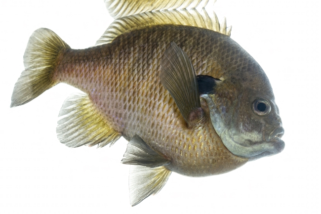
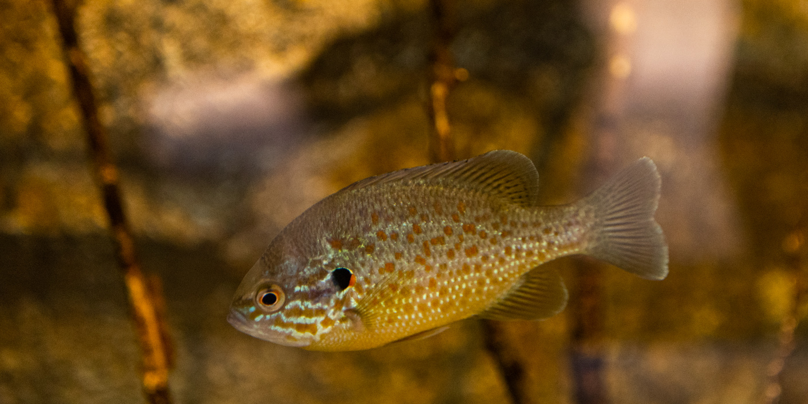

Bluegill
Appearance
Less than a foot long, and has round and flat-like bodies.
Their faces are dark blueish, and they have black spots on each side of their heads.
Life span
They have an average life span of 5-8 years in the wild.
Location
They are located all across the continental United States and northern Mexico.

(Stukel & U.S. Fish and Wildlife Service, 2018)
Pumpkinseed Sunfish
Appearance
They look similar to bluegills but have a red spot on the
side of their heads and wavy turquoise bands across their face.
Life span
They have an average life span of 5-6 years in the wild.
Location
They are native to the northeastern United States but can be found throughout
the continental United States due to humans introducing them to other environments.

(Smithsonian’s National Zoo & Conservation Biology Institute, n.d.)
Sources
- U.S. Fish & Wildlife Service. (n.d.). Bluegill (Lepomis macrochirus).
U.S. Department of the Interior. Retrieved February 27, 2026,
from https://www.fws.gov/species/bluegill-lepomis-macrochirus
- Smithsonian’s National Zoo & Conservation Biology Institute. (n.d.).
Pumpkinseed. https://nationalzoo.si.edu/animals/pumpkinseed
- Morrison, A. (2023). Sunfish vs bluegill [Photograph].
Outdoor Life. https://www.outdoorlife.com/fishing/sunfish-vs-bluegill/
- San Diego Zoo Wildlife Alliance. (n.d.). Pumpkinseed sunfish [Photograph].
San Diego Zoo Animals & Plants. https://animals.sandiegozoo.org/animals/pumpkinseed-sunfish
- Stukel, S./U.S. Fish and Wildlife Service. (2018). Bluegill (Lepomis macrochirus)
[Photograph]. U.S. Fish & Wildlife Service.